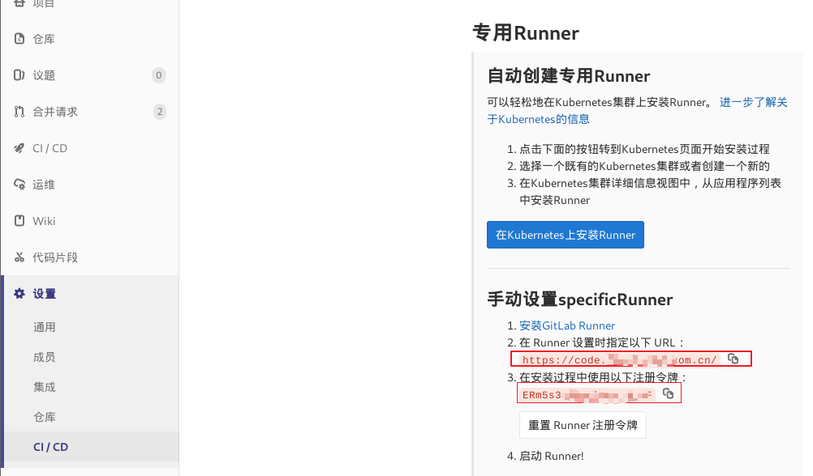
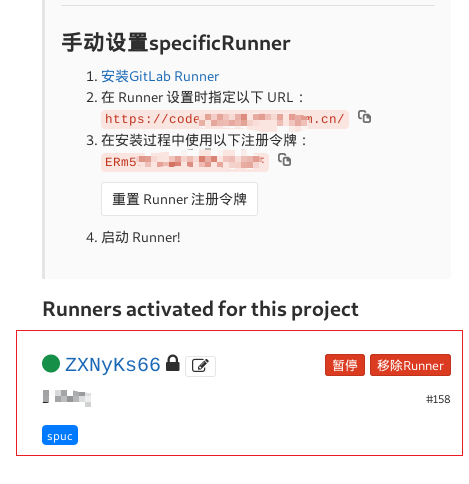
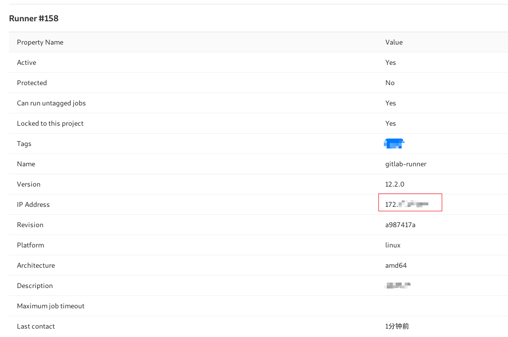

Gitlab的specificRunner安装与注册
前言
这里使用docker版本的specificRunner，以下命令可直接使用。
注册时必须须替换url和 registration-token，其他项可按需求更改。
流程
拉下最新版本镜像
docker pull gitlab/gitlab-runner启动启动容器
docker run -d --name gitlab-runner --restart always \ -v /srv/gitlab-runner/config:/etc/gitlab-runner \ -v /var/run/docker.sock:/var/run/docker.sock \ gitlab/gitlab-runner:latestrunner注册
docker exec -it gitlab-runner gitlab-runner register \ --non-interactive \ --executor "docker" \ --docker-image alpine:latest \ --url "https://gitlab.com/" \ --registration-token "PROJECT_REGISTRATION_TOKEN" \ --description "docker-runner" \ --tag-list "docker" \url和registration-token是在Gitlab的CI/CD页面
检查注册是否成功

绿色代表注册成功。

如果ip与本机不同，不用担心，这是gitlab分配的地址，可以正常调用。
查看日志
docker logs -f gitlab-runner注意
如果是虚拟机中的docker，则需要将虚拟机挂在到物理网络才可以连接。否则虽然虚拟机中的runner可以注册到gitlab，但gitlab无法访问